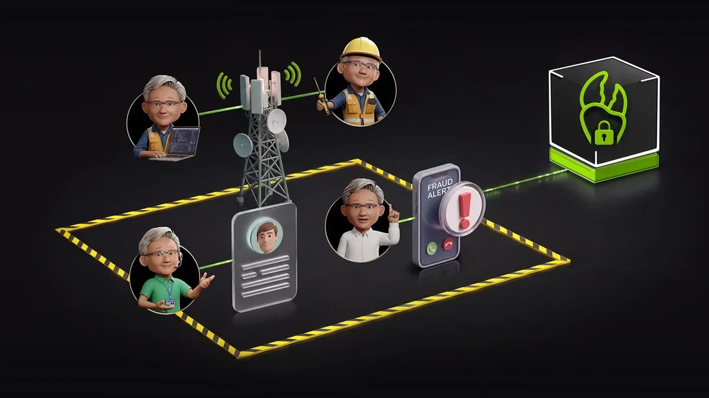
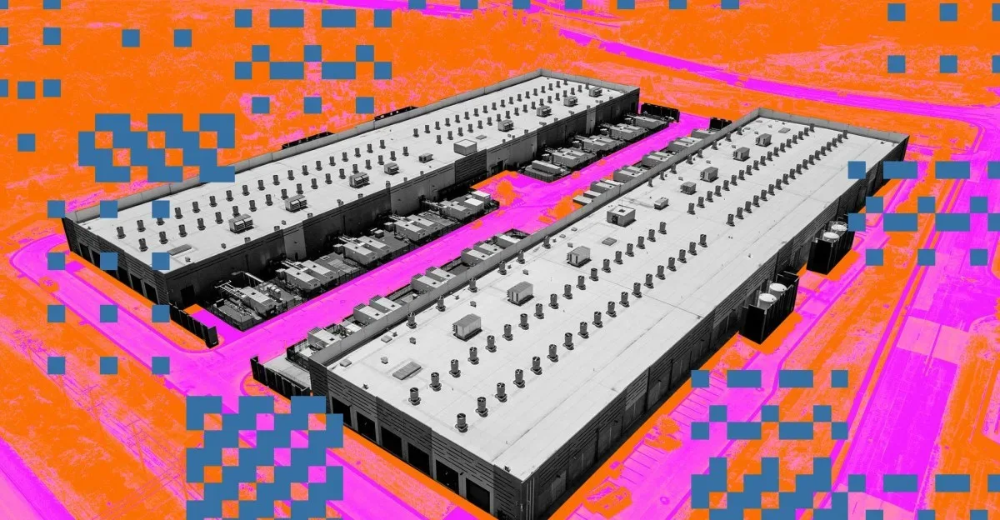
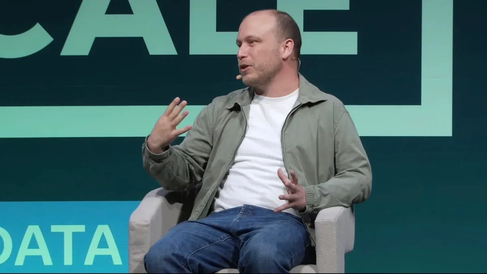
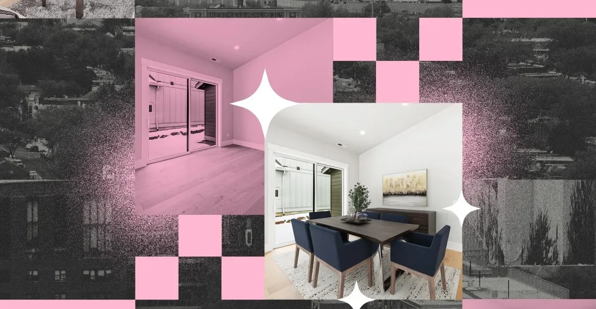

ЛабораторииКод
NVIDIA представила ИИ-агентов для автономной работы телеком-операторов
На DTW Ignite 2026 NVIDIA показала, как ИИ-агенты на базе NeMo и OpenShell делают сети самоуправляемыми.
NVIDIA Blog
23 июн.Сохранённые материалы за этот день.
38 материалов

На DTW Ignite 2026 NVIDIA показала, как ИИ-агенты на базе NeMo и OpenShell делают сети самоуправляемыми.
OpenAI с Trail of Bits помогут open-source мейнтейнерам чинить баги с помощью ИИ.
Крупные технологические компании в 2026 году активно сокращают персонал, указывая на ИИ как на движущую силу — от Oracle до GitLab.

Nvidia обещает почти нулевое потребление воды в ЦОД Rubin за счёт жидкостного охлаждения и температуры 45 °C.
Водный след ИИ-дата-центров не ограничивается охлаждением — Nvidia решает лишь часть проблемы.
Groq привлек $650 млн и переориентируется на облачный бизнес после потери ключевых сотрудников в пользу Nvidia.

Создатель Claude Code объяснил, почему агентные петли — не хайп, а реальный следующий шаг эволюции ИИ.

ИИ-меблировка квартир: как риелторы экономят на съёмках, а арендаторы теряют время